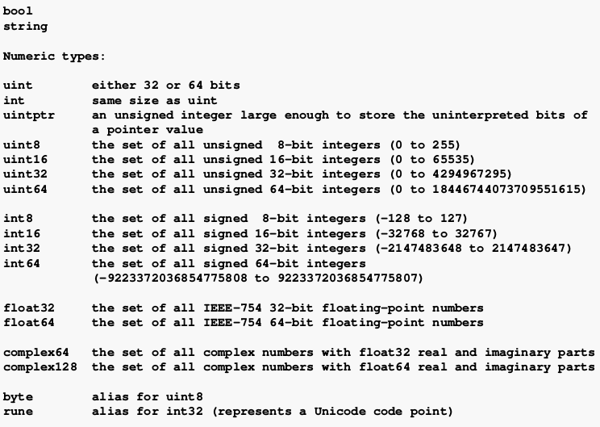

GOLANG 1.23.X
INSTALACION
Como root
tar -C /usr/local -xzf go-file.tar.gz
// como usuario
nano $HOME/.bashrc
nano $HOME/.profile
// añadir a cada uno
# Golang conf
export PATH=$PATH:/usr/local/go/bin
export GOPATH=$HOME/path/to/golang/code
export PATH=$PATH:$GOPATH/bin
// La siguiente linea hay veces que es necesaria
export GOBIN=$PATH:$GOPATH/bin
Para recargar la configuracion
source ~/.profile
Carpetas que se crean:
bin- Contiene los binarios compilados. Podemos añadir la carpetabinal path del sistema para hacer los binarios compilados ejecutables desde cualquier sitiopkg- contiene los versiones compiladas de las librerias disponibles para que el compilador las pueda enlazar sin tener que recompilarlassrc- contiene todo el codigo organizado por rutas de import
VS Code
Go: Install/Update Tools
ENLACES UTILES
- Go
Interfaces
Tipos de funcion
Modulos
Ejemplos - gobyexample
Ejemplos - rosettacode
GO MODULES en VSCODE
GO MODULES en VSCODE
- Blogs
Jacob Martin - Articulos y tutoriales
Dave Cheney
Alex Edwards
- Desarrollo Web
Writing Web Applications - Tutorial basico de la wiki de golang.org
Ejemplos Golang para web - gowebexamples
- Librerias
database/sql
go-sql-driver/mysql
gorilla-websocket
gobwas-ws
- Utilidades
curl-to-Go - Herramienta online que convierte comandos curl en codigo Go
JSON-to-Go - Herramienta online que convierte JSON en structs para Go
- Despliegue y seguridad
GO TOOL
go <command> [arguments]
The commands are:
bug start a bug report
build compile packages and dependencies
clean remove object files and cached files
doc show documentation for package or symbol
env print Go environment information
fix update packages to use new APIs
fmt gofmt (reformat) package sources
generate generate Go files by processing source
get download and install packages and dependencies
install compile and install packages and dependencies
list list packages or modules
mod module maintenance
run compile and run Go program
test test packages
tool run specified go tool
version print Go version
vet report likely mistakes in packages
Use "go help <command>" for more information about a command.
Additional help topics:
buildmode build modes
c calling between Go and C
cache build and test caching
environment environment variables
filetype file types
go.mod the go.mod file
gopath GOPATH environment variable
gopath-get legacy GOPATH go get
goproxy module proxy protocol
importpath import path syntax
modules modules, module versions, and more
module-get module-aware go get
packages package lists and patterns
testflag testing flags
testfunc testing functions
Use "go help <topic>" for more information about that topic.
install
// descarga el codigo y todas sus dependencias. Lo compila e instala el
// binario en el directorio $GOPATH/bin
go install github.com/ruta/codigo
// instalar la ultima version
go install ruta/codigo@latest
build
// -o nombre para el ejecutable
go build -o nombreEjecutable program.go
// -s -w eliminan el debug y hacen mas pequeño el binario
go build -ldflags "-s -w"
// para incluir la fecha en el binario
go build -ldflags="-X 'main.releaseDate=$(date -u +%F_%T)'"
GOOS - sistema operativo para el que compilamos
GOARCH - procesador para el que se compila
GOOS=darwin GOARCH=386 go build
GOOS=linux GOARCH=amd64 go build -o geoip
// -o fuerza el nombre del binario al del parametro
GOOS= GOARCH=
windows 386
windows amd64
linux 386
linux amd64
linux arm
linux arm64
android arm
darwin 386
darwin amd64
darwin arm
darwin arm64
Lista de combinaciones validas de sistema operativo y arquitectura
- Usando cgo
Ejemplo : usar libreria de C bearlibterminal con bindings para Go. Descargar aqui
libBearLibTerminal.so (de linuxx64) va a /usr/lib
en gopath (mi caso $HOME/.golang/src/bearlibterminal)
ponemos
BearLibTerminal.go (los bindings a go) y
BearLibTerminal.h (las cabeceras de C)
Ahora ya podemos importar la libreria y usarla
import (
blt "bearlibterminal"
)
Para Compilar a Windows
usr/bin/ld: cannot find -l
// o mingw-64, no tengo claro como van todas esos paquetes tan
// similares
apt-get install gcc-mingw-w64-x86-64 gcc-multilib
cd /usr/x86_64-w64-mingw32/lib
// poner ahi todas las librerias para windows *.dll y *.lib
GOOS=windows GOARCH=amd64 CGO_ENABLED=1 CC=x86_64-w64-mingw32-gcc
go build main.go
OPERADORES
- Aritmeticos
+Suma
-Resta
*Multiplicacion
/Division
%Modulo, lo que sobra de la division entera
++Incremento
--Decremento
- Asignacion
=x = y
+=x = x + y
-=x = x - y
*=x = x * y
/=x = x / y
%=x = x % y
- Comparacion
==igual
!=no igual
>mayor que
<menor que
>=mayor o igual que
<=menor o igual que
- Logicos
&&AND
||OR
!NOT
- Punteros
&devuelve la direccion de una variable
*puntero a una variable
VARIABLES
Una variable puede contener cualquier tipo, incluso una funcion
func main() {
accion := func() {
fmt.Println("Hola")
}
accion()
}
TypeOf(variable) Para averiguar de que tipo es una variable
import ("reflect")
fmt.Println("....", reflect.TypeOf(variable))
Declaracion
- Declaracion de variables
var (
name string
age int
location string
)
var (
name, location string
age int
)
var name string
- Inicializacion de variables
var (
name string = "jolav"
age int = 100
)
var ( // inferred typing
name = "jolav"
age = 32
)
var name, location, age = "jolav", "casa", 100
- Sentencia de asignacion
:=
Dentro de una funcion podemos usar:=en lugar devar
func main() {
name, location := "jolav", "casa"
age := 100
}
- new
Pone a cero el valor del tipo y devuelve un puntero a el.
x := new(int)
- make
Necesario para slices maps y channels
- Zero Values
Cuando se declaran variables sin un valor explicito se les asigna el valor zero
int- 0
float- 0.0
string- ""
boolean- false
pointers- nil
map- nil
slices- nil
array- array listo para usar con sus elementos a zero value que sea
functions- nil
interfaces- nil
channels-nil
- type
package tempconv
import "fmt"
type Celsius float64
type Fahrenheit float64
const (
AbsoluteZeroC Celsius = -273.15
FreezingC Celsius = 0
BoilingC Celsius = 100
)
func CToF(c Celsius) Fahrenheit {
return Fahrenheit(c*9/5 + 32)
}
func FToC(f Fahrenheit) Celsius {
return Celsius((f - 32) * 5 / 9)
}
Alcance
El alcance es la region del programa donde una variable definida existe
Tipos de variables segun donde se declaren:
local variables- dentro de una funcion o un bloque. Fuera de ese entorno no existenpackage variables- fuera de todas las funciones o bloques. Accesibles desde cualquier parte del paqueteformal parameters- en la definicion de los parametros de una funcion. Se tratan como locales para esa funcion y tienen preferencia sobre las globales
Cuando coinciden dentro de una funcion o bloque una local y una global prevalece la local
Conversion de tipos
Go no tiene conversion implicita de tipos
T(v) - Convierte el valor v al tipo T
i := 42
f := float64(i)
u := uint(f)
-
strconv
-
Type Assertion
func diffArray(s1, s2 interface{}) []string {
var aux1 []int
fmt.Println(reflect.TypeOf(s1))
var a1, a2 []string
if reflect.TypeOf(s1) == reflect.TypeOf(aux1) { // s1,s2 son []int
a1, a2 = convertIntToString(s1.([]int), s2.([]int))
// pasamos s1,s2 como []int y usando type assertion
} else {
a1, a2 = s1.([]string), s2.([]string)
}
// aqui ya a1,a2 son []string
func diffTwoArrays() {
diffArray([]int{1, 2, 3, 5}, []int{1, 2, 3, 4, 5}))
diffArray([]string{"diorite", "andesite", "grass", "dirt",
"pink wool", "dead shrub"},
[]string{"diorite", "andesite", "grass", "dirt", "dead shrub"})
}
Punteros
- Punteros vs Valor
Un puntero contiene la direccion de memoria de un valor
Todo en Go se pasa por valor, pero ...
Cuando se declara una variable de tipo de referencia se crea un valor llamado header value que contiene un puntero a la estructura de datos subyacente necesaria para segun cada tipo de referencia.
Cada tipo de referencia contiene campos unicos para gestionar la estructura de datos subyacente propia.
El header value contiene un puntero, por lo tanto puedes pasar una copia de cualquier tipo de referencia y compartir la estructura subyacente intrinsicamente al compartir el puntero.
int - valor
float - valor
string - variable de tipo de referencia, pero funciona como valor
boolean - valor
arrays - valor
slices - variable de tipo de referencia
maps - variable de tipo de referencia
functions - variable de tipo de referencia
interfaces - variable de tipo de referencia
channels - variable de tipo de referencia
- Punteros
Por defecto Go pasa los argumentos por valor (crea una copia)
Para pasarlos por referencia hay que pasar punteros o usar estructuras de
datos que usan valores por referencia como slices y maps.
& - para conseguir el puntero de un valor lo ponemos delante de su nombre
* - para desreferenciar un puntero y que nos de acceso a su valor
Si p es un puntero a x
&x --> p = &x p es el puntero de x (contiene la direccion de memoria de x)
*p --> *p = x *p es el valor de x
i := 42
p := &i // P es un puntero a i
fmt.Println(*p) // 42 , lee i a traves del puntero p
*p = 21 // establece i a traves del puntero p
func main() {
v := *getPointer()
fmt.Println("Value is", v) // Value is 100
m := getPointer()
fmt.Println("Memory is", m) // Memory is 0xc00018c020
}
func getPointer() (myPointer *int) {
a := 100
return &a
}
func main() {
x := 5
zero(&x)
fmt.Println(x) // x is 0
}
func zero(x *int) {
*x = 0
}
func main() {
var i int = 7
var p *int
p = &i
fmt.Println("i : " , i)
fmt.Println("memory address of i : ", &i)
fmt.Println("p : " , p)
fmt.Println("*p : " , *p)
}
[output]
i : 7
memory address of i : 0x10328000
p : 0x10328000
*p : 7
- new
new - coge un tipo como argumento, asigna suficiente memoria para ese tipo
de dato y devuelve un puntero que apunta a esa memoria. Luego el GC (garbage
collector lo limpia todo)
func zero(x *int) {
*x = 5
}
func main() {
x := new(int)
zero(x)
fmt.Println(*x) // x is 5
}
- Mutabilidad
Solo las constantes son inmutables.
Sin embargo como los argumentos se pasan por valor, una funcion que recibe y
modifica un argumento no muta el valor original
- Ejemplo
func addOne(x int) {
x++
}
func main() {
x := 0
addOne(x)
fmt.Println(x) // x da 0
}
// Si usamos punteros
func addOne(x *int) {
*x++
}
func main() {
x := 0
addOne(&x)
fmt.Println(x) // x da 1
}
LECTURA FUNDAMENTAL, stackoverflow pointer vs values
type data struct {
val int
}
func myfunc() data {
// devuelve una copia del struct
return data{val: 1}
}
func myfunc() *data {
// devuelve un puntero al struct creado dentro de la funcion
return &data{}
}
func myfunc(d *data) {
// recibe un struct ya existente y sobreescribe su valor
d.val = 1
}
DATOS BASICOS
Numeros
Cuando se definen numeros de forma literal se puede usar guion bajo _ para hacerlos mas legibles
const segundosEnUnAño = 31_557_600
- Integers
Los enteros son numeros sin decimal
int - positivos y negativos
uint - unsigned, solo los positivos
byte - alias de uint8 (0-255)
rune - alias de int32
- Numeros de Punto Flotante
Son numeros reales (con parte decimal)
float32 - conocido como simple precision
float64 - conocido como doble precision
- Numeros Complejos
complex64 - parte real float32 + partes imaginarias
complex128 - parte real float64 + partes imaginarias

Booleanos
&& - and
|| - or
! - not


Cadenas
Estan hechas de bytes (uno por caracter)
La diferencia entre comillas simples o dobles es que en estas no pueden contener
nuevas lineas y se permiten escapar caracteres especiales
len(string) - longitud de la cadena
"Hola mundo"[1] - acceder a caracteres de la cadena
"Hello, " + World"
Constantes
Se declaran como variables pero con la palabra clave const.
No se pueden declarar usando :=
Solo pueden ser caracteres, string, booleano o valores numericos.
const PI = 3.14
Iota
Es un identificador usado en declaraciones de constantes para indicar que son
autoincrementables. .
Se resetea a cero cuando aparece la palabra reservada const
const ( // iota is reset to 0
c0 = iota // c0 == 0
c1 = iota // c1 == 1
c2 = iota // c2 == 2
)
ESTRUCTURAS DE CONTROL
for
for init; condition; post { }
// for normal
sum := 0
for i := 0; i < 10; i++ {
sum = sum + i
}
for condition { }
// for sin declaraciones pre/post que funciona como un while. Podemos
// tambien quitar hasta los punto y coma
sum := 1
for ; sum < 1000; {
for sum < 1000 {
sum = sum + sum
}
for {}
// for infinito
for {
..codigo
}
if
if answer != 42 {
return "Wrong answer"
}
if err := foo(); err != nil {
panic(err)
}
if {
// codigo
} else {
// codigo
}
switch
switchen golang
- Solo se pueden comparar valores del mismo tipo
- declaracion
defaultpara ejecutarse si todas las demas fallan - en la declaracion se puede usar una expression (pej calcular un valor)
case 300 - 150: - Se puede tener multiples valores un solo caso
case 6, 7: fallthroguhse ejecutan todas las declaraciones que cumplen la condicionbreaksale del switch, por defecto en cada opcion es automatico el break
t := time.Now()
switch {
case t.Hour() < 12:
fmt.Println("Good morning!")
case t.Hour() < 17:
fmt.Println("Good afternoon.")
default:
fmt.Println("Good evening.")
}
switch os := runtime.GOOS; os {
case "darwin":
fmt.Println("OS X.")
case "linux":
fmt.Println("Linux.")
default:
// freebsd, openbsd,plan9, windows...
fmt.Printf("%s.\n", os)
}
range
Para iterar sobre array, slice, string, map o leer de un channel
El valor que nos da range es una copia del valor del elemento original y por tanto si se modifica no afecta al original
for k,v := range zoo {
v.age = 10 // no modifica el original
zoo[k].age = 999 // SI modifica el original
}
- slice
var pow = []int{1, 2, 4, 8, 16, 32, 64, 128}
for key, value := range pow {
fmt.Println("Posicion", key, "valor", value)
}
Podemos omitir el index o el value usando _
for i, _ := range pow
for _, value := range pow
Podemos omitir tambien el valor omitiendo por completo , value
var pow = []int{1, 2, 4, 8, 16, 32, 64, 128}
for key := range pow {
fmt.Println("Posicion", key)
}
for _, value := range pow {
fmt.Println("valor", value)
}
- map
El primer parametro no es un entero autoincrementable sino la clave del map
for key, value := range cities
- break
Paras la iteracion en cualquier momento
- continue
Omites una iteracion
ARRAYS
tipo [n]T - es un array de n elementos de tipo T
- No se pueden redimensionar
- Se pueden inicializar al declararlos
a := [2]string{"hello", "world!"}
a := [...]string{"hello", "world!"}usando una ellipsis para indicar un numero variable de elementos que en este caso son dos
a := [5]int{1: 10, 2: 20}- inicializando solo algunos valores - Mostrar arrays
fmt.Printf("%q\n", a) // ["hello" "world!"] len(array)- MultiDimensionales
var a [4][2]int
array := [4][2]int{{10, 11}, {20, 21}, {30, 31}, {40, 41}}
SLICES
tipo []T - es un slice de elementos de tipo T
- Crear un slice :
Los slice hay que crearlos antes de usarlos
slice literal
mySlice := []int{2, 3, 5, 7, 11, 13}make- crea un slice vacio de una longitud y (opcional una capacidad)
cities := make([]string, len, cap)
- Recortando un slice
s[a:b] - selecciona elementos desde la pos a (inclusive) hasta b (exclusive)
s[:b] - un indice a que no se declara es un 0 implicito
s[a:] - un indice b que no se declara es implicito un len(s)
- Añadiendo a un slice
cities = append(cities, "San Diego")
cities = append(cities, "San Diego", "Mountain View")
otherCities := []string{"Santa Monica", "Venice"}
cities = append(cities, otherCities...)
- Copiar un slice
copy(destino, origen)
- Length
len(slice)
- Nil slices
Declaracion
var z []int - El valor cero de un slice es nil. Un slice nil tiene una
longitud de cero
Inicializacion
z := make([]int, 0)
z := []int{}
Las tres formas son lo mismo
- BiDimensional
// allocate composed 2d array
a := make([][]int, row)
for i := range a {
a[i] = make([]int, col)
}
// allocate composed 2d array
a := make([][]int, row)
e := make([]int, row * col)
for i := range a {
a[i] = e[i*col:(i+1)*col]
}
// otra posibilidad
func get(r, c int) int {
return e[r*cols+c]
}
MAPS
tipo map[a]b - es un map de claves tipo a con valores tipo b
Formado por pares clave/valor
- Crear un map :
Los map hay que crearlos antes de usarlos
map literal
amigos := map[string]int{"Juan":50, "Elena":21, "Carlos":41,}make- creas un nil map vacio
amigos := make(map[string]int)
Si lo declaramos pero no lo inicializamos, al intentar añadir elementos no compilara
amigos := map[string]int{}- declarado pero no inicializado
- Modificando maps
m[key] = elem - Insertando o actualizando un valor
elem = m[key] - Devuelve el elemento
delete(m, key) - Borrando un elemento
elem, ok = m[key] - Testea si existe un valor con una clave determinada
elements := map[string]map[string]string{
"H": map[string]string{
"name":"Hydrogen",
"state":"gas",
},
"He": map[string]string{
"name":"Helium",
"state":"gas",
},
"Li": map[string]string{
"name":"Lithium",
"state":"solid",
},
}
if el, ok := elements["Li"]; ok {
fmt.Println(el["name"], el["state"])
}
STRUCTS
Es una coleccion de campos/propiedades
Solo los campos exportados (primera letra mayuscula) son accesibles de fuera del paquete
Inicializacion
type Circle struct {
x, y, r float64
}
var c Circle - crea una variable local Circle que pone por defecto los
valores a cero (0 para int, 0.0 para float. "" para string, nil para punteros)
c := new(Circle) - asigna memoria para todos los campos, los inicializa a
cero y devuelve un puntero a la struct (*Circle), los punteros se usan mucho en
structs paa que las funciones puedan modificar los datos.
c := Circle{x: 0, y: 0, r: 5}
c := Circle{0, 0, 5}
c := &Circle{0, 0, 5}
c := Circle{x: 1}
c := Circle{}
type Circle struct {
x, y, r float64
}
func main() {
fmt.Println(c.x, c.y, c.r)
c.x = 10
c.y = 5
}
// todo en uno
var addCases = []struct {
in string
want string
}{
{
"2011-04-25",
"2043-01-01T01:46:40",
},
{
"1977-06-13",
"2009-02-19T01:46:40",
},
}
// mas claro
type addCases2 []struct {
in string
want string
}
ac := addCases2{
{
"2011-04-25",
"2043-01-01T01:46:40",
},
{
"1977-06-13",
"2009-02-19T01:46:40",
},
}
// para verlos
for i, v := range addCases {
fmt.Println(i, v.in)
}
for i, v := range ac {
fmt.Println(i, v)
}
// con nombres
fmt.Printf("%+v\n", struct)
// bien formateado
s, _ := json.MarshalIndent(g, "", "\t")
fmt.Print(string(s))
func show() {
fmt.Println(t[0].hola)
fmt.Println(test2[1].hola2)
}
type test []struct {
hola string
}
var t = test{
{"prueba1"},
{"prueba2"},
}
var test2 = []struct {
hola2 string
}{
{"prueba3"},
{"prueba4"},
}
Metodos
Un metodo es una funcion con el primer argumento implicito llamado receptor.
func (ReceiverType r) func_name (parameters) (results)
El receptor (receiver) del metodo esta entre la palabra clave function y el nombre del metodo
func (u User) Greeting() string - nos permite llamarla con u.Greeting()
- Organizacion del codigo
package models
// list of packages to import
// list of constants
// list of variables
// Main type(s) for the file,
// try to keep the lowest amount of structs per file when possible.
// List of functions
// List of methods
- Alias
Para definir metodos en un tipo que no es tuyo se usan alias
import "strings"
type MyStr string
func (s MyStr) Uppercase() string {
return strings.ToUpper(string(s))
}
func main() {
fmt.Println(MyStr("test").Uppercase())
}
- Usar punteros en los receptores
Los metodos se pueden asociar a un nombre o a puntero. Ventajas de usar punteros:
- evitar copiar el valor con cada llamada al metodo (pasarlo por referencia)
- para poder modificar el valor que pasamos
type User struct {
name string
email string
}
func (u user) notify() {
fmt.Printf("Mandar correo a %s<%s>\n", u.name, u.email)
}
// sin el puntero del receptor el correo no se cambiaria.
func (u *user) changeEmail(email string) {
u.email = email
}
SUGERENCIA
Después de declarar un nuevo tipo, trate de responder a esta pregunta
antes de declarar métodos para el tipo:
¿ Añadir o quitar algo de un valor de este tipo necesita crear un nuevo
valor o mutar el existente ?
- Si la respuesta es crear un nuevo valor, usa receptores de valor en
sus métodos.
- Si la respuesta es mutar el valor, usa receptores de puntero.
Esto también se aplica a la forma en que los valores de este tipo deben
pasarse a otras partes de su programa. Es importante ser consistente.
La idea es no centrarse en lo que el método está haciendo con el valor,
sino centrarse en cuál es la naturaleza del valor.
Composicion
type User struct {
Id int
Name, Location string
}
type Player struct {
User
GameId int
}
Podemos acceder a la Struct de User:
a := new(Player)
a.User.Name
a.Name
INTERFACES
- Es un conjunto de metodos
- Es un tipo de datos
package main
import "fmt"
type cat struct {
name string
}
func (c *cat) born() {
fmt.Println(c.name, "is born Miaouu")
}
type dog struct {
name string
}
func (d *dog) born() {
fmt.Println(d.name, "is born Wharff")
}
type animal interface {
born()
}
func born(a animal) {
a.born()
}
func main() {
Jasper := &cat{"JASPER"}
Lucy := &dog{"Lucy"}
Max := new(dog)
Max.name = "Max"
Max.born()
// call born function
born(Jasper)
born(Lucy)
born(Max)
}
package main
import "fmt"
type Human struct {
name string
age int
phone string
}
type Student struct {
Human //an anonymous field of type Human
school string
loan float32
}
// A human likes to stay... err... *say* hi
func (h *Human) SayHi() {
fmt.Printf("Hi, I am %s you can call me on %s\n", h.name, h.phone)
}
// A human can sing a song, preferrably to a familiar tune!
func (h *Human) Sing(lyrics string) {
fmt.Println("La la, la la la, la la la la la...", lyrics)
}
// A Human man likes to guzzle his beer!
func (h *Human) Guzzle(beerStein string) {
fmt.Println("Guzzle Guzzle Guzzle...", beerStein)
}
// A Student borrows some money
func (s *Student) BorrowMoney(amount float32) {
s.loan += amount // (again and again and...)
}
func Prestar(y YoungChap, amount float32) {
y.BorrowMoney(amount)
}
// INTERFACES
type Men interface {
SayHi()
Sing(lyrics string)
Guzzle(beerStein string)
}
type YoungChap interface {
SayHi()
Sing(song string)
BorrowMoney(amount float32)
}
func main() {
mike := Student{Human{"Mike", 25, "222-222-XXX"}, "MIT", 150.50}
mike.BorrowMoney(10)
mike.BorrowMoney(10)
Prestar(&mike, 100)
fmt.Println("Debe ..", mike.loan)
}
- interfaces vacias
1- Todo tiene un type, puedes definir un nuevo type por ejemplo T que tiene tres metodos A, B y C
2- El conjunto de metodos especificos de un type se llama interface type. En nuestro ejemplo T_interface = (A, B, C)
3- Puedes crear un nuevo interface type definiendo los metodos que tiene. Pro ejemplo creo MyInterface = (A)
4- Cuando especificas una variable de tipo interface type le puedes asignar solo los tipos que esten en una interface que sea un superset de tu interface, vamos que todos los metodos de MyInterface deben estar en T_interface
Conclusion : Todos los tipos de variables satisfacen la empty interface. Por tanto una funcion que tiene una interface{} como argumento admite cualquier valor sea el que sea. Pero dentro de la funcion el runtime de Go convierte ese valor a un valor interface{}
func DoSomething(v interface{}) {
// la funcion acepta cualquier valor una vez dentro
// v es del tipo interface{}
}
EL valor de una interfaz son dos word de datos:
- una word es un puntero a una tabla de metodos para el valor del type subyacente
- la otra word es un puntero a los datos actuales de ese valor
FUNCIONES
- Call Stack
func main() {
fmt.Println(f1())
}
func f1() int {
return f2()
}
func f2() int {
return 1
}

-
Argumentos
-
Argumentos que reciben. Las funciones pueden recibir 0 o mas argumentos todos tipados despues del nombre de la variable.
func add(x int, y int) int {
return x + y
}
func add(x, y int) int { // int afecta a todos los parametros (x, y)
return x + y
}
// ... funciones que aceptan un numero variable de parametros
func add(args ...int) int {
total := 0
for _, v := range args {
total += v
}
return total
}
func main() { // pasamos los parametros que queramos
fmt.Println(add(1,2,3))
xs := []int{1,2,3}
fmt.Println(add(xs...)) // tambien podemos pasar un slice
}
- Retorno de parametros, puede devolver cualquier numero de ellos
return region, continente // devuelve mas de un valor
// Si los parametros de retorno estan nombrados vale con solo return
func location(name, city string) (region, continent string) {
..codigo
return // devuelve region y continent
}
- Closures
func generadorPares() func() uint {
i := uint(0)
return func() (ret uint) {
ret = i
i = i + 2
return
}
}
func main() {
nextPar := generadorPares()
fmt.Println(nextPar()) // 0
fmt.Println(nextPar()) // 2
fmt.Println(nextPar()) // 4
}
- Recursion
func factorial(x uint) uint {
if x == 0 {
return 1
}
return x * factorial(x-1)
}
type function
package main
import "fmt"
type test_int func(int) bool
// isOdd takes an ints and returns a bool set to true if the
// int parameter is odd, or false if not.
// isOdd is of type func(int) bool which is what test_int
// is declared to be.
func isOdd(integer int) bool {
if integer%2 == 0 {
return false
}
return true
}
// Same comment for isEven
func isEven(integer int) bool {
if integer%2 == 0 {
return true
}
return false
}
// We could've written:
// func filter(slice []int, f func(int) bool) []int
func filter(slice []int, f test_int) []int {
var result []int
for _, value := range slice {
if f(value) {
result = append(result, value)
}
}
return result
}
func main(){
slice := []int {1, 2, 3, 4, 5, 7}
fmt.Println("slice = ", slice)
odd := filter(slice, isOdd)
fmt.Println("Odd elements of slice are: ", odd)
even := filter(slice, isEven)
fmt.Println("Even elements of slice are: ", even)
}
defer
Aplaza la ejecucion de una funcion hasta que termina la funcion en la que se encuentra. Lo tipico es cerrar archivos o desbloquear un mutex(mutual exclusion, para asegurar que solo una goroutine puede acceder a la vez a una variable)
func main() {
defer fmt.Println("world")
fmt.Println("hello")
}
Se usa para liberar recursos cuando se pueda
f, _ := os.Open(filename)
defer f.Close()
panic, recover
panic("valor de panic") - crea un runtime error .
recover() - detiene el panic y devuelve el valor que fue pasado con la
llamada a panic
Un panic generalmente indica un error de programacion o una condicion
excepcional de la que no hay forma facil de recuperarse
func main() {
defer func() {
str := recover()
fmt.Println(str)
}()
panic("PANIC")
}
CONCURRENCIA
goroutines
go f(x) comienza la ejecucion de una nueva goroutine que es una funcion capaz de ejecutarse concurrentemente con otras funciones.
// sin wait, el programa main puede acabar antes de que las goroutines
// hagan lo que tengan que hacer
func parallelLetFreq() {
var wg sync.WaitGroup
wg.Add(3) // suma 3 a las goroutines a esperar
go count("1", &wg)
go count("2", &wg)
go count("3", &wg)
wg.Wait() // espera a todas las goroutines (3 en este caso)
}
func count(n int, wg *sync.WaitGroup) {
defer wg.Done() // al terminar la funcion terminar goroutine
fmt.Println("Number --> ", n))
}
channels
channels - son un conducto a traves del cual puedes recibir y enviar datos con
el operador <-
ch <- data - Envia data al canal ch
data := <-ch - Recibe informacion del canal ch y lo asigna a data
ch := make(chan int) - Los canales hay que crearlos antes de usarlos
Por defecto los envios y recepciones esperan hasta que el otro lado este listo. Esto permite a las goroutines sincronizarse sin bloqueos especificos o condiciones
func sum(a []int, c chan int) {
sum := 0
for _, v := range a {
sum += v
}
c <- sum // send sum to c
}
func main() {
a := []int{7, 2, 8, -9, 4, 0}
c := make(chan int)
go sum(a[:len(a)/2], c)
go sum(a[len(a)/2:], c)
x, y := <-c, <-c // receive from c
fmt.Println(x, y, x+y)
}
- Buffered channels
ch := make(chan int, 100) - Ponemos un buffer a los canales indicando su
longitud como segundo argumento en el make para inicializar el canal
Enviar datos aun canal con buffer se bloquea si el buffer esta lleno
Recibir datos de un canal con buffer se bloquea si el buffer esta vacio
func main() {
c := make(chan int, 2)
c <- 1; c <- 2; c <- 3
fmt.Println(<-c); fmt.Println(<-c); fmt.Println(<-c)
} // fatal error: all goroutines are asleep - deadlock!
Sin embargo el siguiente funcionaria. Al añadir el valor extra desde una goroutine no se bloquea el hilo principal pues aunque la goroutine se llama antes que el canal se vacie esta esperara hasta que haya espacio en el canal.
func main() {
c := make(chan int, 2)
c <- 1; c <- 2
c3 := func() { c <- 3 }
go c3()
fmt.Println(<-c); fmt.Println(<-c); fmt.Println(<-c)
}
- Close
close(ch) - Solo un emisor puede cerrar un canal. Enviar a un canal cerrado
causa un panic. No son como ficheros que hace falta cerrarlos. Solo se cierran
para avisar al receptor de que no llegaran mas datos y para terminar los loop
range
v, ok := <-ch - Un emisor puede cerrar un canal para indicar que no se enviara nada mas. Los receptores pueden testear cuando un canal ha sido cerrado
asignando un segundo parametro a la expresion receptora
ok sera falso cuando no haya mas valores que recibir y el canal este cerrado.
for i := range ch - recibe valores del canal hasta que se cierre
- Select
Es como switch pero con canales
1A - 89
1B - 103
MODULES
go mod init nombreModulo
go mod init github.com/jolav/nombreModulo
// listar todos los modulos con sus dependencias
go list -m all
go list all ./...
// chechear paquetes con actualizaciones
go list -m -u all
go list -m -u -json all
// actualizar
// cambiar manualmenrte el archivo go.mod o
// actualiza todas salvo nueva version mayor,
go get -v -u ./...
// para versiones especificas o nueva version mayor
go get -v -u github.com/user/repo@v1.1.1
//despues para asegurar que el el codigo que tenemos en el modulo coincide
// con el archivo gp.mod ejecutamos
go mod tidy
PAQUETES
Un programa Go esta hecho con paquetes. Los programas empiezan ejecutando la
funcion main dentro del paquete main.
Por convencion el nombre del paquete es la ultima palabra de la ruta del import.
El paquete "math/rand" comprende archivos que comienzan con la sentencia
package rand
Paquetes que no son de la libreria estandar se importan usando una URL web,
pero antes hay que descargarlos con go get
go get github.com/creador/ruta/al/paquete
import "github.com/creador/ruta/al/paquete"
Despues de importar un paquete podemos usar los nombres que el exporta (sean variables, metodos o funciones) desde fuera de el paquete. Los nombres exportados en Go comienzan por letra mayuscula
package main
import ( "fmt" "math" )
func main() {
fmt.Println(math.Pi)
fmt.Println(math.pi)
}
// cannot refer to unexported name math.pi
Otras formas de importar paquetes
ìmport alias "fmt"- Crea un alias de fmt. Ahora es alias.LoQueSea en lugar de fmt.LoQueSeaimport . "fmt"- Permite acceder al contenido directamente sin tener que ir precedido de fmtimport _ "fmt"- Elimina las advertencia del compilado sobre ese paquete si no se usa y ejecuta si hay las funciones de inicializacion (func init() {}), El resto del paquete permanece inaccesible.
Crear paquetes
Los nombres de paquetes coinciden con la carpeta donde estan. Esto se puede
cambiar pero no merece la pena
Por convencion el nombre del paquete es la ultima palabra de la ruta del import.
~/src/proyectoX/main.go
package main
import "fmt"
import "proyectoX/utilidades" // la ruta es a partir de srcs
func main() {
// llamada a utilidades.Media(xs)
}
~/src/proyectoX/utilidades/media.go
package utilidades
func Media() {
// codigo que sea
}
Desinstalar paquetes
go clean -i ruta/paquete... - teoricamente borras los pkg y bin, los src hay que borrarlos manualmente
Actualizar
go get -u all - Actualiza todos
go get -u full/package/name - Actualizar solo ese paquete
EJECUCION
El programa se inicia por la funcion main del package main
Antes se ejecutan las funciones init de ese fichero
Los paquetes importados "_ import "ruta/paquete" hacen que el compilador acepte un paquete que no se usa y ademas ejecutan la o las funciones init de ese paquete
TESTING
El compilador ignora todos los archivos que terminan en _test.go
~/src/proyectoX/utilidades/media_test.go
package utilidades
import "testing"
type testpair struct {
values []float64
average float64
}
var tests = []testpair{
{[]float64{1, 2}, 1.5},
{[]float64{1, 1, 1, 1, 1, 1}, 1},
{[]float64{-1, 1}, 0},
}
func TestAverage(t *testing.T) {
for _, pair := range tests {
v := Media(pair.values)
if v != pair.average {
t.Error(
"For", pair.values,
"expected", pair.average,
"got", v,
)
}
}
}
go test
ERRORS
Los captura un tipo interfaz predefinido cuyo unico metodo Error devuelve
una cadena
type error interface {
Error() string
}
Forma estandard de tratar los errores.
log.Fatal(err) - manda el error a la terminal y detiene el programa
f, err := os.Open("filename.ext")
if err != nil {
log.Fatal(err)
}
Podemos aligerar la repeticion un poco usando:
func check(e error) {
if e != nil {
panic(e)
}
}
// y ahora ya solo ponemos
check(err)
LIBRERIA ESTANDAR
FMT
import "fmt"
fmt.Print() - imprime
fmt.Println() - imprime y salta de linea
fmt.Printf() - imprime con un determinado formato
type point struct {
x, y int
}
p := point{1, 2}
fmt.Printf("%v\n", p) // {1 2}
// en una struct, `%+v` incluye los nombres de los campos de la struct
fmt.Printf("%+v\n", p) // {x:1 y:2}
// Imprimir el tipo de un valor
fmt.Printf("%T\n", p) // main.point
// `%d` para enteros standard
fmt.Printf("%d\n", 123) // 123
// Imprime el caracter que corresponde al entero
fmt.Printf("%c\n", 65) // a
// Imprime floats
fmt.Printf("%f\n", 78.9) // 78.90000
// Imprime string basicas `%s`.
fmt.Printf("%s\n", "\"string\"") // "string"
// Imprimir Booleano
fmt.Printf("%t\n", a ==b) // true o false
// Imprime un puntero`%p`.
fmt.Printf("%p\n", &p) // 0x42135100
fmt.Sprint() - devuelve el resultado a una string
fmt.Sprintln() - devuelve el resultado con salto de linea a una string
fmt.Sprintf() - devuelve el resultado con un determinado formato a una string
// las Sxxx() son como las normales en vez de imprimir el resultado
// lo devuelven como un string
s := fmt.Sprintf("Hi, my name is %s and I'm %d years old.", "Bob", 23)
// s vale "Hi, my name is Bob and I'm 23 years old."
fmt.Scan() - para leer una palabra del teclado , almacena sucesivos valores
separados por un espacio en sucesivos argumentos. Saltos de linea cuentan como
espacio
fmt.Scanln() - para leer una palabra del teclado , almacena sucesivos valores
separados por un espacio en sucesivos argumentos. Saltos de linea acaban con la
lectura de datos
- verbos
- General
%v - valor en formato por defecto. En structs %+v añade los nombres de los campos
%T - tipo del valor
%#v - representacion del tipo del valor con sintaxis de golang
- Booleano
%t - booleano, devuelve palabra true o false
- Integer
%b - devuelve en base 2
%c - devuelve caracter representado por el correspondiente codigo Unicode
%d - devuelve en base 10
%U - formato Unicode
- Floating point
f% - notacion decimal sin exponentes
e% - notacion decimal con exponentes
- Strings y []byte
%s - cadenas normales
%q - para escapar comillas dobles
%x - convierte a base hexadecimal
STRINGS
import "strings"
strings.Contains("test", "es") = true - Contiene "test" a "es"
strings.Count("test", "t") = 2 - Cuantas "t" hay en "test"
strings.HasPrefix("test", "te") = true - Comienza "test" por "te"
strings.HasSuffix("test", "st") = True - Acaba "test" en "st"
strings.Index("test", "e") = 1 - Posicion de string "e" dentro de string
"test", si no esta devuelve -1
strings.Join([]string{"a","b"}, "-") = "a-b" - Coge una lista de strings y
las junta en una separadas por otra string ("-" en el ejemplo)
strings.Repeat("a", 5) = aaaaa - Repite una string n veces
strings.Replace("aaaa", "a", "b", 2) = "bbaa" - reemplaza en una cadena una
parte por otra n veces (o todas las que se pueda si pasamos -1)
strings.Split("a-b-c-d-e", "-") = []string{"a","b","c","d","e"} - Parte una
string en un array de strings usando otra string como separador
strings.ToLower("test") = "TEST "- convierte la cadena a minusculas
strings.ToUpper("TEST") = "test" - convierte la cadena a mayusculas
strings.Fields("cadena que sea) = como split usando espacios en blanco. es equivalente a si usaramos strings.Split(text, " ")
strings.Trim("cadena","loquecorta") = elimina en cadena todas las loquecorta pero solo del comienzo y del final
strings.Trim(" !!! Achtung! Achtung! !!! ", "! ") == ["Achtung! Achtung"]
Convertir string en slice of bytes y viceversa
arr := []byte("test")
str := string([]byte{'t','e','s','t'})
Fuera del paquete string
len("aquiunacadena") - nos da la longitud de la string
"cadena"[3] - nos da el codigo ASCII del caracter de indice 3, "e" = 101
string(cadena[n]) - nos da el caracter de la cadena en la posicion n
STRCONV
import "strconv" - conversiones entre numeros y strings
s := strconv.Itoa(-42) - int to string
i, err := strconv.Atoi("-42") - string to int
b, err := strconv.ParseBool("true") - string to boolean
f, err := strconv.ParseFloat("3.1415", 64) - string to float
i, err := strconv.ParseInt("-42", 10, 64) - string to int
u, err := strconv.ParseUint("42", 10, 64) - string to uint
s := strconv.FormatBool(true) - boolean value to string
s := strconv.FormatFloat(3.1415, 'E', -1, 64) - float to string
s := strconv.FormatInt(-42, 16) - int to string
s := strconv.FormatUint(42, 16) - uint to string
APPEND
func append(slice []T, elements...T) []T.
IO
import "io"
Tiene dos interfaces principales
-
Reader
soporta leer a a traves del metodo Read -
Writer
soporta escribir a traves del metodo Write
IO/IOUTIL
import io/ioutil
- leer y escribir un archivo
De esta forma cargamos todo el archivo en memoria de golpe.
Mas control a traves de un File struct del paquete OS
data := []byte("Hello World!\n")
// write
err := ioutil.WriteFile("data1", data, 0644)
if err != nil {
panic(err)
}
//read
read, err := ioutil.ReadFile("data1")
if err != nil {
return
}
fmt.Print(string(read1))
- Limitar tamaño io
defer resp.Body.Close()
limitReader := &io.LimitedReader{R: resp.Body, N: 2e6} // (2mb)
body, err := ioutil.ReadAll(limitReader)
OS
import "os"
- Saber donde estamos
os.Getwd()
- leer escribir un archivo
// Una forma
file, err := os.Open("test.txt")
if err != nil {
// handle the error here
}
defer file.Close()
stat, err := file.Stat() // get the file size
if err != nil {
return
}
bs := make([]byte, stat.Size()) // read the file
_, err = file.Read(bs)
if err != nil {
return
}
str := string(bs)
fmt.Println(str)
// otra forma
data := []byte("Hello World!\n")
// write to file and read from file using the File struct
file1, _ := os.Create("data2")
defer file1.Close()
bytes, _ := file1.Write(data)
fmt.Printf("Wrote %d bytes to file\n", bytes)
file2, _ := os.Open("data2")
defer file2.Close()
read2 := make([]byte, len(data))
bytes, _ = file2.Read(read2)
fmt.Printf("Read %d bytes from file\n", bytes)
fmt.Println(string(read2))
- crear un archivo
func main() {
file, err := os.Create("test.txt")
if err != nil {
return
}
defer file.Close()
file.WriteString("test")
}
- Leer el contenido de un directorio
Readdir - coge un argumento que es el numero de entradas que devuelve. Con -1
devuelve todas
func main() {
dir, err := os.Open(".")
if err != nil {
return
}
defer dir.Close()
fileInfos, err := dir.Readdir(-1)
if err != nil {
return
}
for _, fi := range fileInfos {
fmt.Println(fi.Name())
}
}
Walk - para recorrer recursivamente un directorio. Pertenece al paquete
path/filepath
- Command line arguments
el primer valor del slice de argumentos es el nombre del comando path incluido
argsWithProg := os.Args- slice completo con comando nombre path incluido
argsWithoutProg := os.Args[1:] - slice solo de argumentos
arg := os.Args[x] - devuelve argumento de posicion X
- environment variables
os.Setenv("nombreVariable", "valor") - establece un par clave/valor para una variable de entorno
os.Getenv("nombreVariable") - devuelve el valor de esa clave
// os.Environ es una lista de todas las variables de entorno
for _, e := range os.Environ() {
pair := strings.Split(e, "=")
fmt.Println(pair[0], "-->", pair[1])
}
PATH/FILEPATH
import path/filepath
- Recorrer recursivamente un directorio
Walk
func main() {
filepath.Walk(".", func(path string, info os.FileInfo, err error)
error {
fmt.Println(path)
return nil
})
}
REGEXP
import "regexp"
// Comprueba si es una cadena
patron := "loquequeremoscomprobar"
match, _ := regexp.MatchString("p([a-z]+)ch", patron)
fmt.Println(match)
// o compilamos primero una struct optimizada para regexp
patron := "loquequeremoscomprobar"
r, _ := regexp.Compile("p([a-z]+)ch")
fmt.Println(r.MatchString(patron))
// Por ejemplo cambiar en la cadena s los guiones bajos por guiones
r := regexp.MustCompile("_")
s = r.ReplaceAllString(s, `-`)
JSON
import "encoding/json"
dataJson, err := json.Marshal(structObject) - Go struct data to JSON data
dataJson, err:= json.MarshalIndent(strObj, "", " ") - bien preformateado
err := json.Unmarshal(dataJson, &structObject) - JSON data to Go struct data
urlDir := "https://domain.tld/api/que/queramos"
resp, err := http.Get(urlDir)
if err != nil {
log.Fatal(err)
}
defer resp.Body.Close()
body, err := ioutil.ReadAll(resp.Body)
if err != nil {
log.Fatal(err)
}
body = body[5 : len(body)-6] // quitar mis pegatinas de <pre></pre>
var s structObject
err = json.Unmarshal(body, &s)
fmt.Println(s)
- Convertir json to go struct
json:"-" ignora ese campo tanto al convertir a json o al convertir desde json
json:"nombreCampo,omitempy - no se incluye el campo al convertir a json si ese campo ya tiene un valor por defecto.
- Decoder
Ademas de Unmarshal/Marshal existe Decoder/Encoder, que se debe usar si los datos vienen de una stream io.Reader como por ejemplo el Body de una http.Request.
Si los datos estan en una string o en memoria mejor usar Unmarshal
type configuration struct { lo que sea }
file, _ := os.Open("conf.json")
defer file.Close()
decoder := json.NewDecoder(file)
conf := configuration{}
err := decoder.Decode(&conf)
if err != nil {
fmt.Println("Error:", err)
}
fmt.Println(conf)
- Parsing Interfaces
Análisis de una interfaz
Si realmente no tienes ni idea de cómo podría ser tu JSON, se puede analizar en una interfaz genérica{}. Una interfaz vacía es una forma de definir una variable en Go como "esto podría ser cualquier cosa". En tiempo de ejecución, Go asignará la memoria adecuada para que se ajuste a lo que decida almacenar en ella.
Esto es lo que parece:
var parsed interface{}
err := json.Unmarshal(data, &parsed)
En realidad, el uso de parsed es un poco laborioso, ya que Go no puede usarlo sin saber de qué tipo es.
switch parsed.(type) {
case int:
someGreatIntFunction(parsed.(int))
case map:
someMapThing(parsed.(map))
default:
panic("JSON type not understood")
}
También puedes hacer aserciones de tipo similares en línea:
intVal, ok := parsed.(int)
if !ok {
panic("JSON value must be an int")
}
Afortunadamente, sin embargo, es raro no tener idea de lo que puede ser un valor. Si, por ejemplo, sabe que su valor JSON es un objeto, puedes analizarlo en una interfaz de map[string]interface{}. Esto te da la ventaja de poder referirte a claves específicas. Un ejemplo:
var parsed map[string]interface{}
data := []byte(`
{
"id": "k34rAT4",
"age": 24
}
`)
err := json.Unmarshal(data, &parsed)
A continuación, puedes referirte a las teclas específicas sin ningún problema:
parsed["id"]
Sin embargo, todavía tienes interfaces como valor de su map, por lo que debes hacer type assertions para utilizarlas:
idString := parsed["id"].(string)
Go utiliza estos seis tipos para todos los valores analizados en las interfaces:
bool, for JSON booleans
float64, for JSON numbers
string, for JSON strings
[]interface{}, for JSON arrays
map[string]interface{}, for JSON objects
nil for JSON null
Es decir, tus números siempre serán de tipo float64, y necesitarán ser casteados a int, por ejemplo. Si tiene una necesidad de obtener enteros directamente, puedes usar el método UseNumber. Lo que te da un objeto que puede convertirse en un float64 o en un int a tu discreción.
De manera similar, todos los objetos decodificados en una interfaz serán map[string]interface{}, y necesitarán ser mapeados manualmente a cualquier estructura aue quieras usar.
TIME
import "time"
now := time.Now() - nos da la hora actual 2012-10-31 15:50:13.793654 +0000 UTC
then := time.Date(2015, 10, 10, 18, 30, 08, 0, time.UTC) - Creamos un struct de tiempo asociado a una localizacion (time zone)
then.Year()
then.Month()
then.Day()
then.Hour()
then.Minute()
then.Second()
then.Nanosecond()
then.Location()
then.Weekday()
then.Before(now)
then.After(now)
then.Equal(now)
diff := now.Sub(then) - metodo Sub devuelve duracion del intervalo entre dos tiempos
diff.Hours()
diff.Minutes()
diff.Seconds()
diff.Nanoseconds()
// avanzar o retroceder en el tiempo
then.Add(diff)
then.Add(-diff)
// sumar tiempo
tiempoQueSea.Add( 1000 * time.Hours)
- String to Time
// pasar una fecha a string segun un determinado formato
layout := "2006-01-02 15:04:05"
t, err := time.Parse(layout1, start)
if err != nil {
fmt.Prinltln(err)
}
// Hora actual a string con determinado formato
horaActual = time.Now().Format(layout)
- Time to String
myString = myTime.String()
- Timestamp
Unix epoch
now := time.Now()
secs := now.Unix()
nanos := now.UnixNano()
millis := nanos / 1000000
time.Unix(secs, 0)
time.Unix(0, nanos)
- Intervalos
timers - para hacer algo una vez dentro de un tiempo
timer1 := time.NewTimer(time.Second * 2)
<-timer1.C
fmt.Println("Timer 1 expired")
timer2 := time.NewTimer(time.Second)
go func() {
<-timer2.C
fmt.Println("Timer 2 expired")
}()
stop2 := timer2.Stop()
if stop2 {
fmt.Println("Timer 2 stopped")
}
// Timer 1 expired
// Timer 2 stopped
// Timer 2 expired NUNCA APARECE, se cancela antes
tickers - para hacer algo repetidamente a intervalos regulares
ticker := time.NewTicker(time.Millisecond * 500)
go func() {
for t := range ticker.C {
fmt.Println("Tick at", t)
}
}()
time.Sleep(time.Millisecond * 1600)
ticker.Stop()
fmt.Println("Ticker stopped")
MATH
import "math"
math.Floor(x float64) float64 - devuelve el entero (int) mas grande poisble menor o igual que x
math.Pow(x,y float64) float64 - x elevado a y
MATH/RAND
import "math/rand"
rand.Intn(10)- genera un numero aleatorio entero >= 0 y < 10
rand.Float64()- genera un numero aleatorio >= 0.0 y < 1.0
(rand.Float64()*5)+5- genera entre >= 5.0 y < 10.0
s1 := rand.NewSource(time.Now().UnixNano())- semilla para que no sea siempre igual
r1 := rand.New(s1)- para ir cambiando la semilla
rand.Seed(time.Now().UTC().UnixNano()) - otra forma de cambiar la semilla para que no siempre sea igual
func init() {
//fmt.Println(`Init from package tracker`)
r = rand.New(rand.NewSource(time.Now().UnixNano()))
}
var r *rand.Rand
func createRandomString() string {
const chars = "abcdefghijklmnopqrstuvwxyz0123456789"
result := ""
for i := 0; i < lenID; i++ {
result += string(chars[r.Intn(len(chars))])
}
return result
}
DATABASE/SQL
FLAG
import "flag"
Para enviar argumentos a un comando
SORT
import sort
Contiene funciones para ordenar datos arbitrario de slices de ints y floats y structs definidas por el usuario
- s = []strings
sort.strings(s) - De menor a mayor alfabeticamente
- n = []ints || float32 || float64
sort.Ints(n) - Ordena los numeros de menor a mayor
sort.IntsAreSorted(n) - booleano que devuelve si estan ordenados
- custom sorting
package main
import "sort"
import "fmt"
// If I have an array/slice of structs in Go and want to sort them
// using the sort package it seems to me that I need to implement
// the whole sort interface which contains 3 methods:
// https://golang.org/pkg/sort/#Interface
type ByLength []string
func (s ByLength) Len() int {
return len(s)
}
func (s ByLength) Swap(i, j int) {
s[i], s[j] = s[j], s[i]
}
func (s ByLength) Less(i, j int) bool {
return len(s[i]) < len(s[j])
}
func main() {
fruits := []string{"peach", "banana", "kiwi"}
sort.Sort(ByLength(fruits))
fmt.Println(fruits)
}